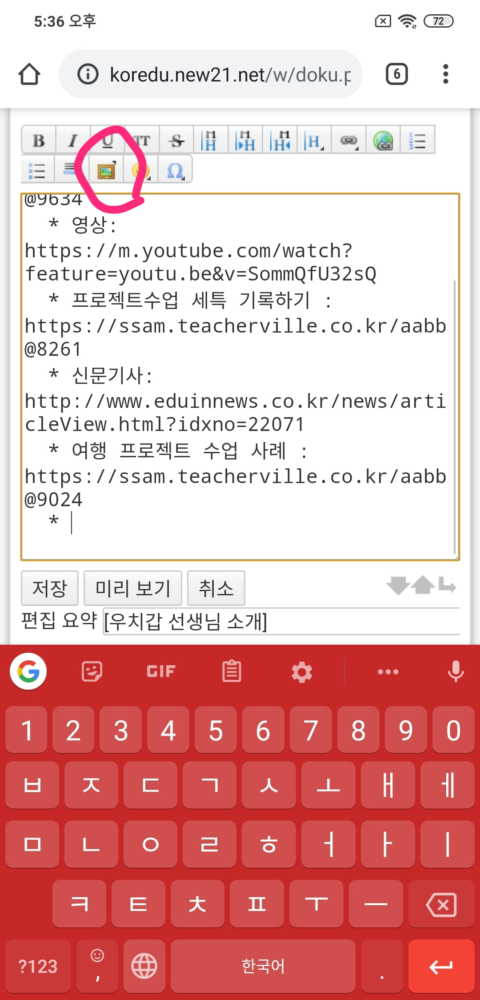
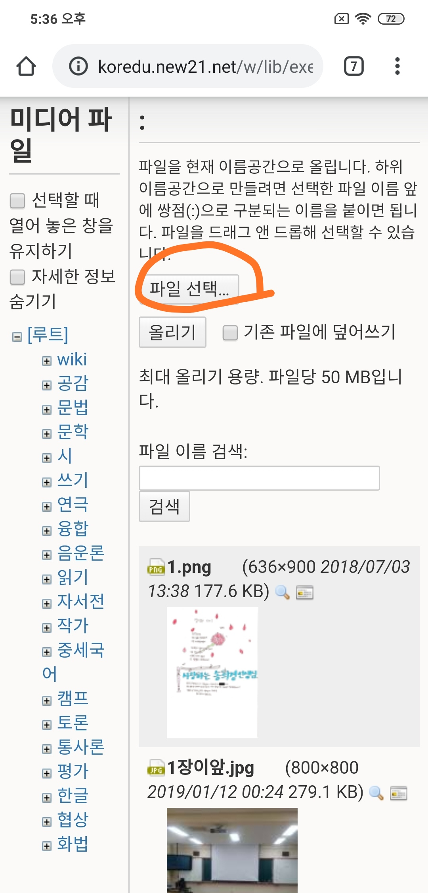
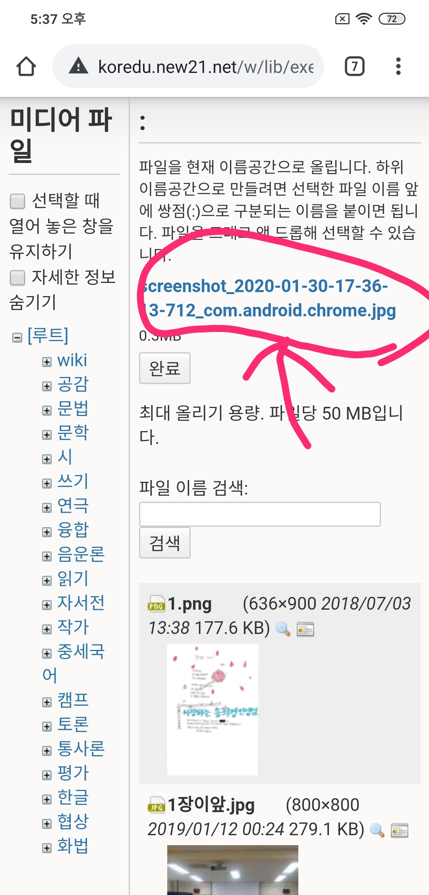
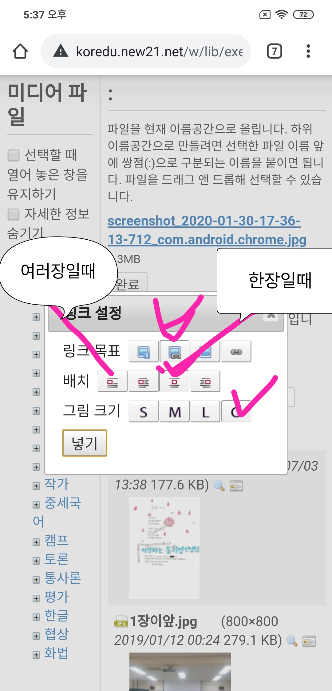
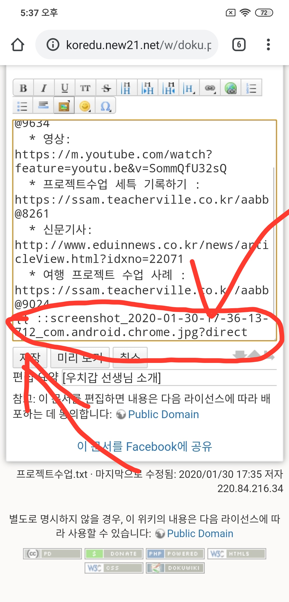
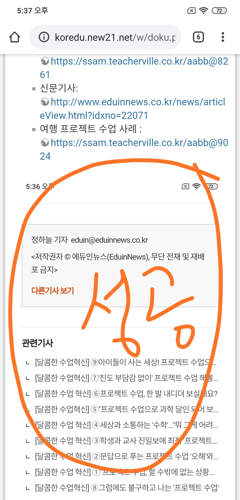

국어교육위키에서 글 작성시 "그림" 삽입하는 법.
1. 툴바에서 액자 그림을 누른다.

2. "파일 선택"을 누른다.

2. 파일을 올리면 다음과 같이 파일 이름이 "파랗게" 보이는데 그걸 누른다.

3. 다음과 같이 그림 크기와 배치를 설정한다.

4. 입력창에 그림이 삽입된 걸 확인하고 "저장"을 누른다.

5. 실제 화면에 그림이 삽입된 걸 확인하면 성공. 그림이 너무 크거나 적으면 다시 "문서 편집"을 눌러서 이미지 크기를 살짝 조절한다.
